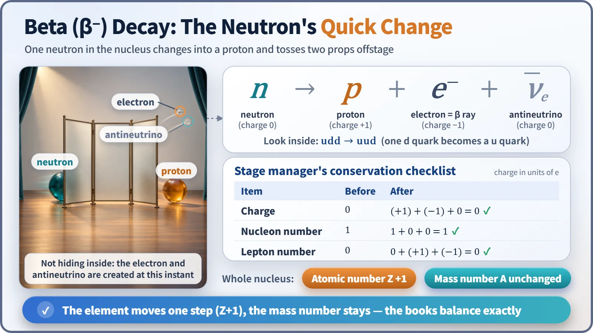
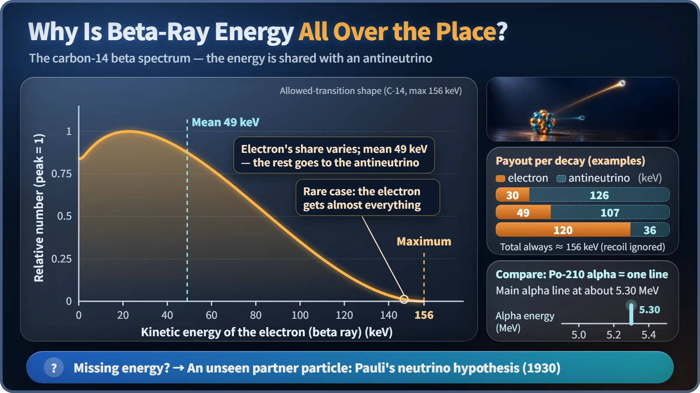

Nuclear & Radiation Basics · 013
A Quick Change on Stage — How Beta Decay Turns a Neutron into a Proton
One neutron changes into a proton and tosses out two newly made particles. Because they split the energy, no two beta rays carry quite the same amount.
In beta-minus decay, one neutron in a neutron-rich nucleus turns into a proton and creates an electron (the beta ray) and an antineutrino on the spot. The atomic number rises by 1 while the mass number stays the same, and because the electron and antineutrino share the energy, beta-ray energies form a continuous spread rather than a single line. [1]
What happens while the lights flicker?
In a musical's "quick change," the lights flicker and an actor dressed as a servant reappears in a prince's cloak, while two discarded props go flying offstage. The same thing happens in a nucleus: the star is a neutron, the new role is a proton, and the props are an electron and an antineutrino. The scene's name is beta decay, precisely beta-minus (β⁻) decay.
One line in the script: n → p + e⁻ + ν̄
Here n is the neutron, p the proton, e⁻ the electron and ν̄ the antineutrino, a neutral, nearly massless particle that can pass straight through a planet. The fast electron is called the beta ray.
The electron was not hiding inside the neutron. It is created and thrown out at the very instant of the change; that is where the quick-change analogy fails, since stage props are prepared in advance. The books still balance: charge goes 0 → (+1) + (−1) + 0, and the nucleon count stays 1 → 1. At a deeper level, one d quark of the neutron (udd) turns into a u quark, making a proton (uud). [2]

Same cast size, new cast list
For the nucleus as a whole, the proton count (atomic number Z) goes up by 1 and the nucleon count (mass number A) stays the same. Since the proton count is the element's name tag, the element changes. Carbon-14, with 6 protons and 8 neutrons, becomes nitrogen-14, with 7 and 7, still mass number 14. The electron doesn't count toward the mass number: it isn't a nucleon, and its mass is only about 1/1,800 of a proton's. Carbon-14's half-life of about 5,730 years makes it the clock of carbon dating. [3]
Why change at all? For a given mass number, a nucleus with too many neutrons is in a lower-energy arrangement after turning one neutron into a proton, and the leftover energy rides out on the props. Proton-rich nuclei go the other way, turning a proton into a neutron by emitting a positron (β⁺ decay) or capturing an inner electron (electron capture); both lower Z by 1 and leave A unchanged.
Why the props fly a different distance every time
In alpha decay the alpha particle's energy is fixed at almost one value per nuclide. Beta-ray energies, though, came out scattered continuously from zero up to a maximum, so much that some wondered whether energy conservation failed here. In 1930 Wolfgang Pauli proposed that an invisible neutral particle carries off part of the energy: the neutrino hypothesis. With two props, the shared total is fixed but the electron's share varies. The particle was caught in 1956 by a detector next to a nuclear reactor. [4]
For carbon-14 the maximum beta energy is 156 keV, but the average is only about 49 keV, roughly a third; the antineutrino takes the rest.

Also why a reactor stays warm after shutdown
Uranium holds far more neutrons than protons, so its fission fragments are neutron-rich compared with stable nuclei of the same size. They beta-decay several times in a row toward stability: xenon-140, for example, passes through cesium, barium and lanthanum to stable cerium-140.
| Time after shutdown (after long operation) | Decay heat, share of pre-shutdown power |
|---|---|
| Right after shutdown | about 6–7% |
| 1 hour later | around 1.5% |
The electrons from these chains, and the gamma rays that follow, are absorbed by surrounding material and become the main source of decay heat, which is why cooling continues after a reactor is turned off. The antineutrinos' share flies straight out into space and never becomes heat. [5]
Key takeaways
In a neutron-rich nucleus, one neutron changes into a proton and tosses out an electron and an antineutrino: the element moves one step, the mass number stays, and the shared energy makes the beta spectrum continuous. The same chained beta decays in fission products keep a shut-down reactor warm.